愛子大仏/宮城県仙台市
仙台市青葉区。 仙台市内といっても仙台の街中からはるか離れ、どちらかというと郊外、というより田舎。 そんな愛子（あやし）駅の北の山の上にあやしい、じゃなくて愛子（あやし）大仏が鎮座している。 山の上といっても人里離れたところというわけではなく人家もあり、隣にはゴマあんが人気の仙台銘菓、白松ガ最中の工場などがあるようなところだ。 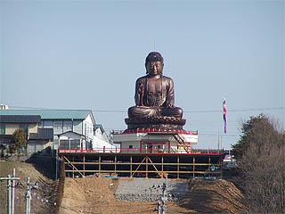 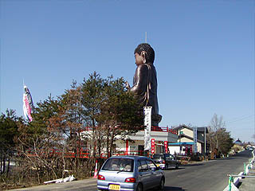 コレが愛子大仏の勇姿である。正面右から台座に至る階段が見える。 スキーのジャンプ台のようにずずずい〜っと削った山の斜面の上に鎮座している。下の方は未完成だが完成すると木造の懸造風の舞台になる予定。 大仏へのアプローチは背後の車道から。 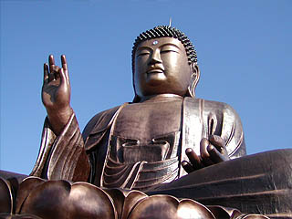 奈良の大仏と同じ廬舎那仏。サイズも奈良の大仏とほとんど同じだそうです。 地名の愛子（あやし）とかけて愛子様御生誕を祝した大仏だそうだ。 愛子様御生誕が平成13年12月。愛子大仏の完成日時は失念したが今月（平成15年3月）完成したとしても生誕から1年余。と言う事は建設の期間も含めて時期が合わないような気がするんですけど・・・ それとも計画から完成まで1年位でつくちゃったんでしょうか？ 後付けにせよ何にせよ皇室関係の奉祝というのは戦前によくみられた正統派の大仏の建造理由である。その意味では堂々たる正統派の大仏と言う事も出来る。 穿った見方をすれば霊園の宣伝のための大仏と言う事もできるが、建造理由のダブルミーニングというのもまた古くからの習わしであるからしてそれをどうこう言うつもりはさらさら無いですます、ハイ。 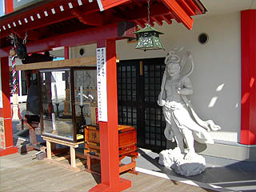 台座正面は扉があり鍵がかかっていたので中の様子は伺いしることは出来なかったが、アノお方（愛子さまのパパ）が参拝に来られたと思われる写真が飾ってありました。凄い！皇室御墨付きってことですか？ 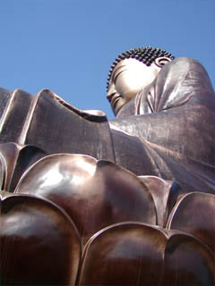 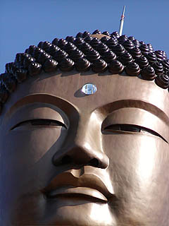 露天の鋳造製の座像という事で雰囲気としては香港の天壇大仏に似てなくもない。 顔のふっくらした感じなどは天壇大仏そっくりだ。 脳天のアンテナ（避雷針？）がちょっとロボっぽくてカッコ良い。ラジコン操作で動きそう。 眉間の白毫はプラスチックなのだろうか？4点ネジどめの跡がくっきりと。 台座の右にある階段を登ってみる。鋳造製の大仏には似つかわしくない木製ペンキ塗りのウッディな仕上がりだ。 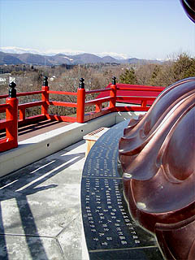 で、階段を登りきると正面に大仏さんがどーんとそびえている。 蓮華の外周には石が張ってありそこには奉納者の名前がずらりと並んでいる。 遥か遠くには雪で白くなった蔵王山系が見えて大変眺めが良く気持ち良い。 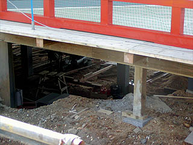 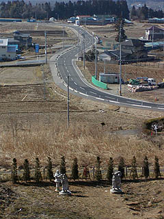 床下の懸造は未完成。山の斜面の一番下には仁王像と灯籠が寂しそうに立っていた。 全部完成すれば仁王さまと大仏さんの間の斜面も階段か何かになるのだろうか。 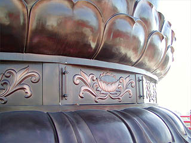 台座の左に回り込むと一ケ所だけ把手が付いている。隙間から中を覗き込むとガラーンとしていて何も無かった。 天辺のアンテナ（か避雷針）のメンテ用の入口と思われる。 中に入らせてくれても良くってよ♡ 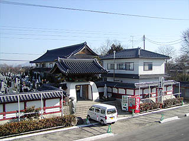 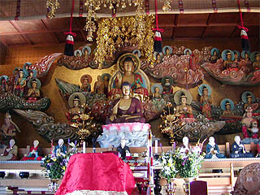 大仏の裏には本堂と墓地がある。墓地は只今ジャンジャン売り出し中。 本堂にあがってみると豪華絢爛な本尊がまつられていた。 超ゴージャスな内陣に感動。そんじょそこらじゃ見られない一大立体絵巻だ。 ある意味大仏よりインパクトがあったぞ。 それにしてもこれだけの大仏が、しかもローカル線といえども車窓からも見える大仏が話題にのぼらないと言うのは一体どう言う事なのだろう？ 愛子様フィーバーの頃（あ、今でも一部では大フィーバー中ですね）にもマスコミ等で紹介された記憶も無いし・・・ とりあえず愛子様が健やかに成長されますようにって事でここで声を大にして勝手に宣伝させてもらいます。 全国の愛子様マニア、拝んどけ〜 大仏建立がめっきり少なくなった昨今、国内最新大仏として益々研鑽を積んで頑張って頂きたいものである。
2003.3.
珍寺大道場 HOME